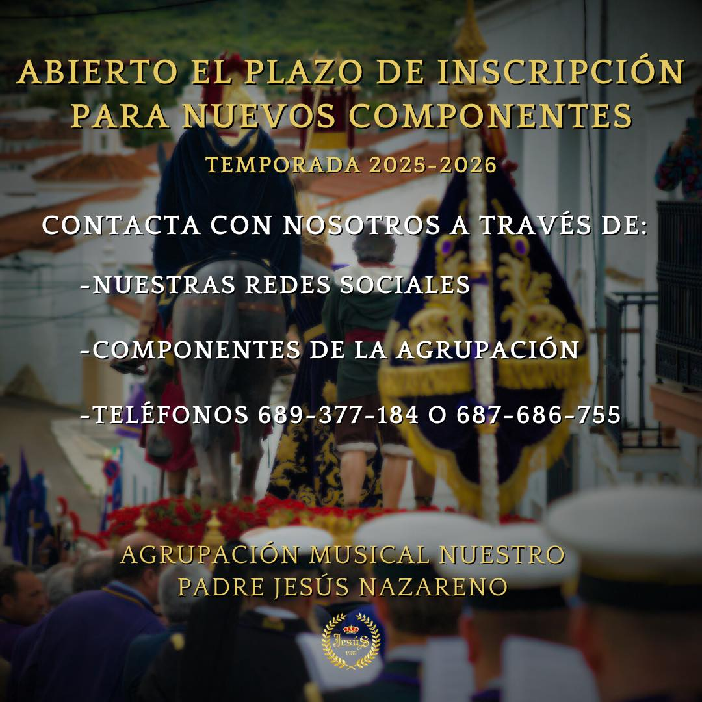

Ninguno, en esta agrupación recibimos a todos los que gustaria formarse en este mundo con los brazos abiertos, contamos con mucha cantidad de ensayos, bien sean generales como por las voces. Tambien damos clase a los nuevos par que puedan ir aprendiendo poco a poco, de manera que puedan disfrutar de esta afición.
No es necesario que tengas un instrumento propio. En esta agrupación ofrecemos instrumentos a nuestros integrantes, pero también permitimos que quienes tengan el suyo lo utilicen sin problema.
Nos encontramos en Tr.ª Sta. María, 1-2, 06380 Jerez de los Caballeros, Badajoz
Actualmente tenemos abiertas las inscripciones para que puedas unirte, puedes llamar al telefono de la foto o si desea, rellene este formulario: Formulario de inscripción de Jesus
